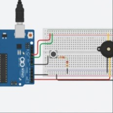
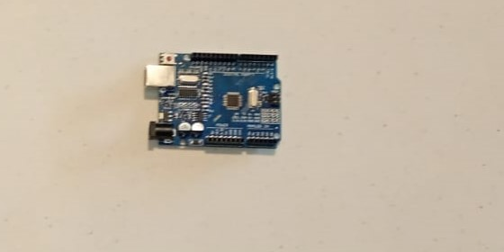

Desarrollo del Proyecto
Documentación completa del proceso de diseño, construcción y programación del timbre automático.
Construcción del Circuito
Fase 1 · Semana 1
Selección de Componentes
Se definieron los componentes necesarios: Arduino UNO como microcontrolador, dos botones pulsadores de 2 terminales, un buzzer activo de 5V, cables jumper macho-hembra.

Fase 2 · Semana 1
Diseño del Circuito
Se diseñó el diagrama de conexiones. Los botones se conectan a los pines digitales 2 y 3 del Arduino. El buzzer se conecta al pin 4 con alimentación de 5V a través del Arduino.
CONEXIONES: Pin 2 (Arduino) ← Botón 1 Pin 3 (Arduino) ← Botón 2 Pin 4 (Arduino) → Buzzer (+) GND (Arduino) → Buzzer (-) y Botones (GND)

Fase 3 · Semana 2
Montaje del proyecto
Se realizó el montaje del circuito siguiendo el diagrama diseñado. Se verificaron todas las conexiones antes de conectar la alimentación y cargar el código.

Lista de Materiales
| # | Componente | Cantidad | Función |
|---|---|---|---|
| 1 | Arduino UNO R3 | 1 | Microcontrolador |
| 2 | Botón pulsador 2 terminales | 2 | Entrada de datos |
| 3 | Buzzer activo 5V | 1 | Salida sonora |
| 5 | Cable jumper macho-hembra | 8 | Conexiones |
| 6 | Cable USB tipo B | 1 | Programación y energía |
Programación
Fase 4 · Semana 2–3
Desarrollo del Código
Se programó el Arduino con el IDE oficial. El código detecta cuando se presiona cualquiera de los dos botones y activa el buzzer con una duración configurable.
// Timbre Automático - Código Principal const int BTN1 = 2; const int BTN2 = 3; const int BUZZER = 8; void setup() { pinMode(BTN1, INPUT); pinMode(BTN2, INPUT); pinMode(BUZZER, OUTPUT); } void loop() { if (digitalRead(BTN1) == HIGH || digitalRead(BTN2) == HIGH) { tone(BUZZER, 1000, 500); delay(1000); } delay(50); }
Fase 5 · Semana 3
Pruebas e Iteraciones
Se probó el código en el Arduino y se ajustaron los parámetros de frecuencia, duración y comportamiento. Se realizaron varias iteraciones para optimizar la respuesta.

Pruebas y Resultados
Fase 6 · Semana 4
Pruebas con VS y Phyton para la pagina del timbre
Se realizaron pruebas con el VS y Arduino vinculandose entre si para poder sincronizar y guardar con milisegundos para tener mayor presición. Hubo muchas fallas más que nada con las librerias y la ruta del sitio para ejecutarlo.
Resultados:
- ✓ Botón 1: 20/20 activaciones exitosas
- ✓ Botón 2: 20/20 activaciones exitosas
- ✓ Tiempo de respuesta: <50ms
- ✓ Durabilidad: 100+ ciclos sin fallos